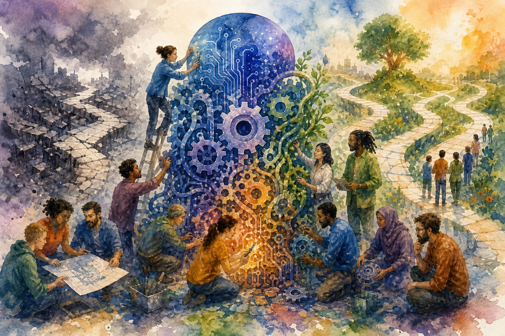

Eric J Ma's Website
written by Eric J. Ma on 2026-07-24 | tags: ai agents code review cognitive debt software engineering llms pull requests understanding learning micro-worlds
I map a growing consensus: now that AI agents write so much of our code, producing it is cheap, but *understanding* it is the real bottleneck. I share my own struggles reviewing forty-file diffs and explore how cognitive debt quietly accrues when we approve polished PRs we can't actually explain. Drawing from thinkers like Geoffrey Litt and Simon Willison, I highlight practical techniques to fight back, like literate diffs, interactive micro-worlds, and quizzes. (I even quiz you on this very post!) How are you keeping your mental model alive when your agent types faster than you can think?
Read on... (2705 words, approximately 14 minutes reading time)written by Eric J. Ma on 2026-07-23 | tags: bayesian outliers automation hierarchy statistics reproducibility dose response data analysis
Bayesian modeling with heavy-tailed likelihoods and hierarchical structure automates away manual data analysis tasks like hand-flagging outliers. By using Student-t likelihoods and partial pooling, your pipeline handles messy data points and weird curves in a principled, reproducible way. No clicking through software required. What could your team do with all those afternoons back?
Read on... (2000 words, approximately 11 minutes reading time)written by Eric J. Ma on 2026-07-21 | tags: marimo ai agents learning machine learning notebooks curiosity eli5
Pair-programming with a coding agent in a marimo notebook competition gave me new ideas for using AI to help me learn ML papers. By building interactive artifacts instead of just reading, I grasped concepts like BitNet's ternary weights viscerally. The agent handled the typing, but my curiosity stayed in the driver's seat. What could you learn if jargon stopped getting in the way?
Read on... (1835 words, approximately 10 minutes reading time)written by Eric J. Ma on 2026-07-20 | tags: ai open-source agents policy community collaboration scipy maintainers

In this blog post, I share my thoughts from SciPy 2026 on how open source projects should handle AI-assisted contributions. Drawing from a community discussion and a new AI policy template, I distinguish between developers using AI as a power tool versus mass-produced slop. I encourage maintainers to pick a policy tier, write it down, enforce it, and engage with the humans behind the PRs. What AI policy fits your project?
Read on... (1922 words, approximately 10 minutes reading time)written by Eric J. Ma on 2026-07-19 | tags: xarray datatree python bioinformatics datascience ai agents bayesian curation data packaging lab data
In this blog post, I share how my idea of using xarray for unified lab data evolved into an agent skill for Ian Hunt-Isaak's repo. I explain why xr.DataTree is the key to storing multi-assay data on incompatible grids in a single file, how custom indexes let you query experiments by their actual physical logic, and why Bayesian estimates belong right next to raw data. Ultimately, I argue this pattern scales a single data scientist's judgment across many campaigns. If you are juggling multi-assay biological data, what are your biggest coordinate-matching headaches?
Read on... (1765 words, approximately 9 minutes reading time)written by Eric J. Ma on 2026-07-01 | tags: vllm ollama modal benchmarking deployment inference snapshots latency performance qwen3.6
In this blog post, I share my experiments running Qwen3.6 on Modal with Ollama, vLLM, and SGLang. Frustrated by agonizing cold starts, I benchmarked the engines on identical hardware. Spoiler: vLLM blew Ollama out of the water. By leveraging Modal's GPU snapshots, vLLM not only generated 60% more tokens per second but also restored from a cold start significantly faster. I walk through the exact configuration, three stubborn bugs I had to fix to get snapshots working, and why vLLM's single-process design is the secret. SGLang hit a dtype bug and could not run yet. Have you ever fought with serverless GPU cold starts?
Read on... (3329 words, approximately 17 minutes reading time)written by Eric J. Ma on 2026-06-17 | tags: bayesian modeling automation expertise judgment agents notebooks protein science learning
In this blog post, I share my experience using a coding agent to build a Bayesian model live, highlighting how agents can dramatically speed up work, but only when paired with real expertise. I found that every prompt I gave was rooted in years of judgment, and the agent amplified my strengths while exposing its own blind spots. Ultimately, the more you know, the more leverage these tools provide. Curious how agents can make your expertise even more valuable, and where they might trip you up? Read on to find out.
Read on... (1160 words, approximately 6 minutes reading time)written by Eric J. Ma on 2026-06-16 | tags: automation react productivity ai memory learning coding open source state tools
My coding agent now patches its own skills after watching me work, using an OpenCode plugin I built called opencode-autolearn. Over a few weeks of dogfooding it observed my sessions, extracted lessons, and updated its memory and skills with no manual intervention. I cover the architecture, the design decisions, and the real-world impact, including a Convex migration bug it fixed on its own and how the memory now syncs across machines. Curious how an agent can learn from your workflow and sharpen every session?
Read on... (3368 words, approximately 17 minutes reading time)written by Eric J. Ma on 2026-06-15 | tags: git worktree branches workflow productivity hotfix review cloning cleanup tips
In this blog post, I share how git worktrees have become my go-to solution for juggling multiple branches without the hassle of stashing, committing unfinished work, or cloning repos. I explain what worktrees are, how they differ from clones, and why they're perfect for quick reviews, hotfixes, and parallel development. I also cover common pitfalls and cleanup tips. Curious how worktrees can simplify your workflow and keep your projects organized? Read on to find out!
Read on... (1500 words, approximately 8 minutes reading time)written by Eric J. Ma on 2026-06-13 | tags: voice ai api debugging transcripts web ux tools logging architecture
In this blog post, I share the key lessons I learned building voice-first AI apps, where voice is the main way users interact. From the importance of documentation and API-first design to the necessity of transcripts and centralized voice operations, I cover what works, what doesn't, and how to debug the invisible. The magic of voice-controlled UIs is real, but so are the engineering challenges. Curious about the pitfalls and breakthroughs of building with voice as the primary interface? Read on to find out more.
Read on... (2057 words, approximately 11 minutes reading time)